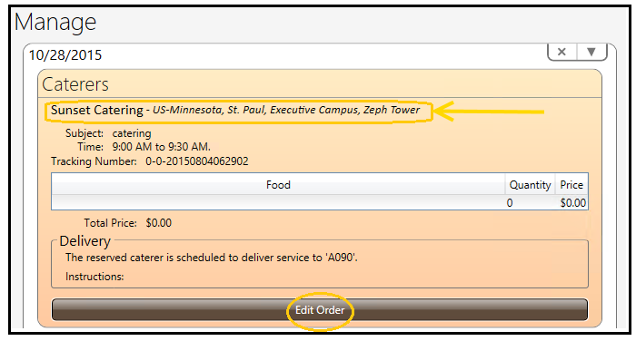
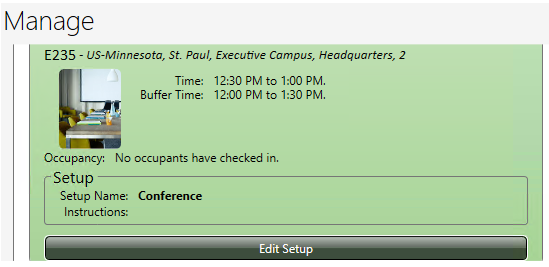

Note: If more than one room or resource is attached to the reservation, use the arrow next to the resource to edit and open the reservation.
Highlight and select day, month, date, year, and time. Use first set of arrows to make edits. Second arrow can also be used to open the calendar and make modifications.
Note: Meetings from the past cannot be edited in MP6 unless the user has access (security permissions).
Note: MP6 automatically generates an email notification with updated date, time, and locations information to attendees. The user has the option to Send the notification or Close (not send notification). Support facility crews and the reservation owner will receive emails notifications when meetings are modified as well.
Note: Edits made to meetings automatically synchronize to Outlook/Exchange and all MP applications.
—or—
‘Create a New Reservation’ at which to deliver the catering order and Reserve.

Note: Catering delivery orders can be reassigned to a new room if the current room reservation is canceled or modified ONLY.
Note: MP6 generates a notification to the reservation owner and catering crew indicating all modifications made to the catering order.
Note: MP6 automatically generates a notification to the reservation owner and equipment support crews indicating the new portable delivery location.
To edit videoconferencing, add another room to include in the videoconference, or delete and replace an existing room.
Note: If the room in which the original videoconference reservation was created is deleted, the videoconference reservation will be lost.

Note: MP6 generates a notification to the reservation owner and facility support crew indicating all modifications made to the setup.